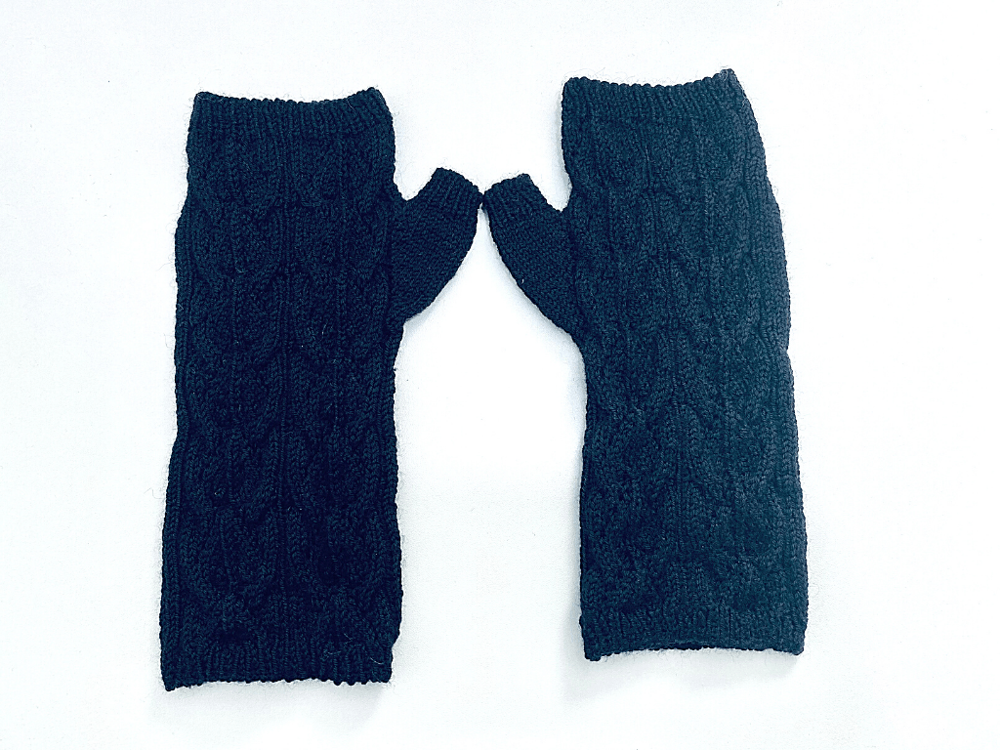

Gliding Birds Mitts de Tisserin-Coquet
Date / Catégorie / Etiquettes

La description de la créatrice Tel un oiseau tournoyant dans les courants ascendants, Gliding Birds joue avec les torsades et la dentelle. Tricoté de bas en haut, le bonnet Gliding Birds inclut des côtes torsadées qui se développent en un motif tourbillonnant facile à retenir. Sa forme slouchy est mise en avant par des diminutions ….
Lire la suite